🚀 星球大战：叛乱
Star Wars: Rebellion · 设计：Corey Konieczka · Fantasy Flight Games (Asmodee) 出版 · 2–4 人 · 官方英文规则书全文翻译（20 页 · AI 辅助机翻）
本页为《星球大战：叛乱》（Star Wars: Rebellion, 2016）官方英文规则书的全文中文翻译，底本为 Fantasy Flight Games 官方 (Asmodee CDN)（sw03_learn_to_play_web.pdf，20 页），整本译出、未删节，原版规则书页面随文嵌入——点击任意图片即可放大查看。规则内容归 Fantasy Flight Games (Asmodee) 及版权方所有，译文仅供个人学习查阅。
整理说明：本页由 AI 辅助机翻整本规则书并按本站术语口径对齐（牌库/手牌/回合/轮/板块/指示物等），数字与费用逐段保留原文口径；如对规则细节有疑问，请以随文原书页面或上方官方原文 PDF 为准。每页译文上方为对应的原版规则书页面。
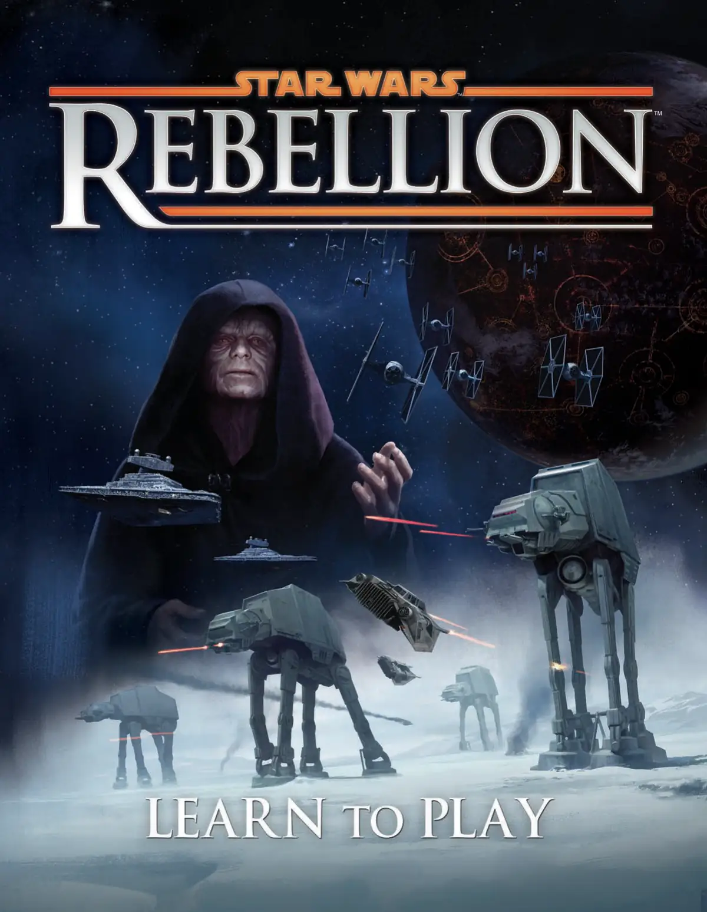
TM
TM
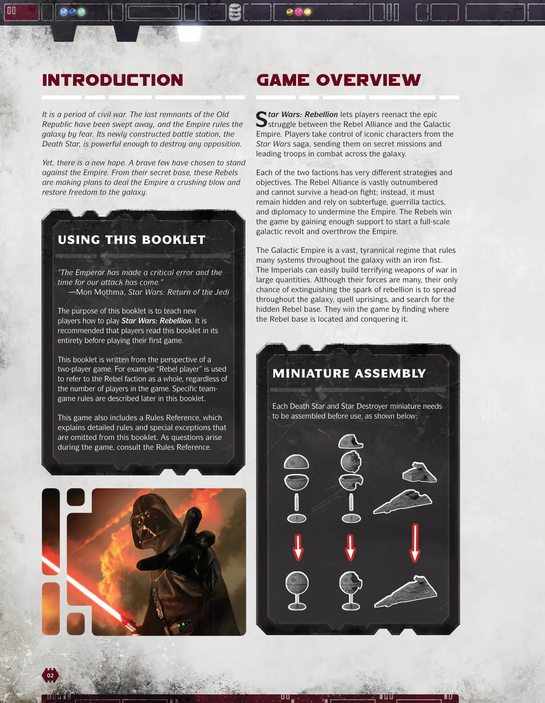
引言
那是一个内战的时期。旧共和国的最后残余势力已被一扫而空，帝国以恐惧统治着银河系。其新建的太空站——死星——强大到足以摧毁任何反对力量。然而，新的希望已经出现。一小群勇敢的人选择反抗帝国。从他们的秘密基地出发，这些反抗军正计划给帝国以沉重打击，并恢复银河系的自由。
游戏概览
《星球大战：反抗军》让玩家能够重演反抗军联盟和银河帝国之间的史诗级斗争。玩家将控制来自《星球大战》传奇故事中的标志性角色，派遣他们执行秘密任务，并在整个银河系中领导部队作战。
两个阵营的策略和目标截然不同。反抗军联盟在数量上远远落后，无法承受正面交锋；相反，它必须保持隐蔽，依靠诡计、游击战术和外交来削弱帝国。反抗军通过获得足够的支持来发动全面的银河系起义并推翻帝国而赢得游戏。
银河帝国是一个庞大的暴政政权，以铁腕统治着银河系中的众多系统。帝国可以轻松地大量建造可怕的战争武器。尽管他们的兵力众多，但他们扑灭反抗星火的唯一机会就是遍布整个银河系，平定起义，并寻找隐藏的反抗军基地。他们通过找到反抗军基地的位置并征服它来赢得游戏。
使用本手册
"皇帝犯下了致命的错误，我们发动攻击的时候到了。"
——莫·玛玛，《星球大战：绝地归来》
本手册的目的是教导新玩家如何玩《星球大战：反抗军》。建议玩家在玩第一局游戏之前完整阅读本手册。
本手册从双人游戏的角度编写。例如，"反抗军玩家"用于指代整个反抗军阵营，无论游戏中有多少玩家。具体的团队游戏规则在本手册后面描述。
本游戏还包括一份规则参考，解释了本手册中省略的详细规则和特殊例外。游戏过程中出现问题时，请查阅规则参考。
模型组装
每颗死星和歼星舰模型在使用前都需要组装，如下图所示：
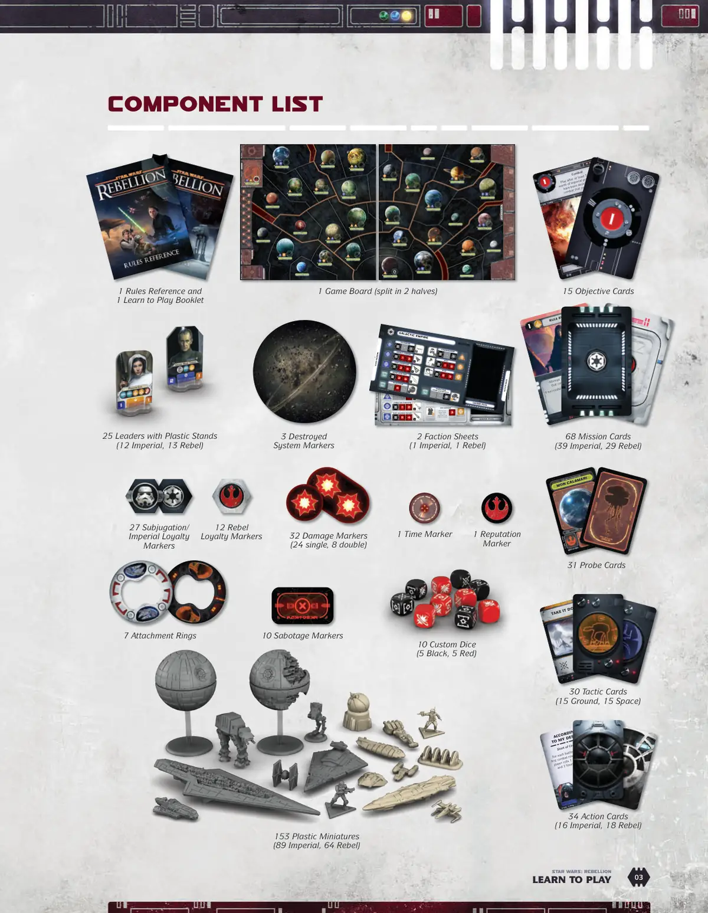
组件清单
1份规则参考书
1份入门指南
153个塑料小模型
（89个帝国，64个反抗军）
25个带塑料底座的领袖
（12个帝国，13个反抗军）
32个伤害标记
（24个单点，8个双点）
7个附件环
31个探测卡牌
34个行动卡牌
（16个帝国，18个反抗军）
30个战术卡牌
（15个地面，15个太空）
3个被摧毁
系统标记
2个阵营表
（1个帝国，1个反抗军）
15个目标卡牌
68个任务卡牌
（39个帝国，29个反抗军）
1个游戏版图（分为2半）
10个定制骰子
（5个黑色，5个红色）
12个反抗军
忠诚标记
27个征服/
帝国忠诚
标记
© FFG
© LFL
致命打击
战斗
在你发起的战斗中，至少摧毁了3点生命值的帝国地面单位后使用。
© FFG
© LFL
蒙·卡拉马里
-
-
-
-
-
反抗军联盟
X翼战机
反军士兵
Y翼轰炸机
气垫车
反军运输舰
护盾发生器
科瑞利亚巡洋舰
离子炮
蒙·卡拉马里巡洋舰
在每个地面
战斗步骤开始时，
抽取1张地面
战术卡牌。
在每个太空
战斗步骤期间，
你的对手少掷2个红色骰子。
领袖池
任务牌库
行动牌库
© FFG
© & TM Lucasfilm Ltd.
-
-
-
-
-
-
突击航母
TIE战斗机
暴风兵
歼星舰
AT-ST步行机
AT-AT步行机
超级歼星舰
银河帝国
领袖池
死星
死星
建造中
任务牌库
行动牌库
© FFG
© & TM Lucasfilm Ltd.
10个破坏标记
1个时间标记
1个声望
标记
© FFG
© LFL
按我的设计
战斗开始
在第一轮战斗中的每场战斗中，反抗军玩家少掷1个红色骰子和2个黑色骰子。
© FFG
© LFL
击毁它
对1个地面单位造成2点伤害。
© FFG
© LFL
以恐惧统治
在任何包含帝国单位的人口稠密系统中尝试。
如果成功，在此系统中获得1点忠诚度。
星球大战：反抗军
入门指南
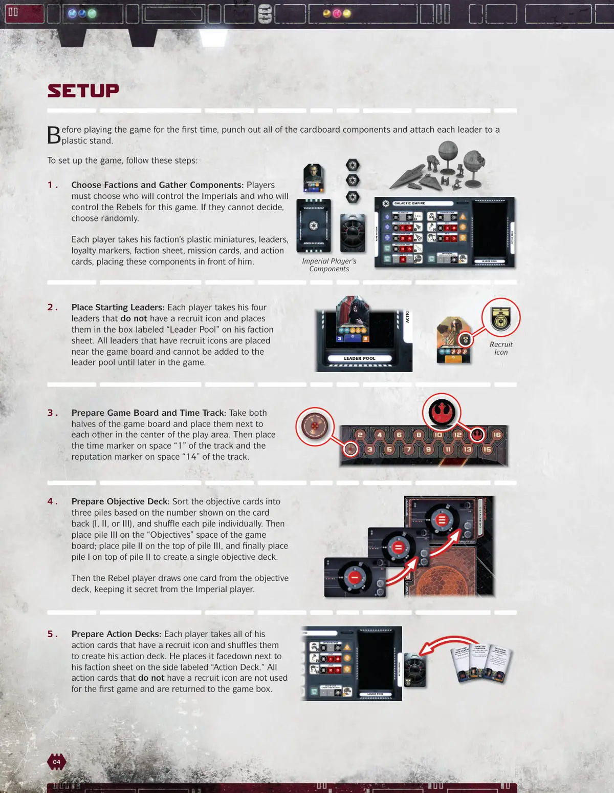
要设置游戏，请遵循以下步骤：
1.
选择阵营并收集组件：玩家必须决定谁将控制帝国方，谁将控制叛军方。如果无法决定，则随机选择。
每位玩家拿取自己阵营的塑料小雕像、领袖、忠诚标记、阵营表、任务卡和行动卡，将这些组件放在自己面前。
2.
放置起始领袖：每位玩家拿取自己没有招募图标的四个领袖，并将它们放在自己阵营表上标记为"领袖池"的盒子中。所有带有招募图标的领袖被放置在游戏版图附近，直到游戏后期才能加入领袖池。
3.
准备游戏版图和时间轨道：将游戏版图的两半并排放在游戏区域的中央。然后将时间标记放在轨道的"1"格上，声望标记放在轨道的"14"格上。
4.
准备目标牌库：根据卡背显示的数字(I、II或III)将目标卡分成三堆，并分别洗牌。然后将III堆放在游戏版图的"目标"格上；将II堆放在III堆的顶部，最后将I堆放在II堆的顶部，形成一个目标牌库。然后叛军玩家从目标牌库中抽取一张卡，对帝国玩家保密。
5.
准备行动牌库：每位玩家拿取自己所有带有招募图标的行动卡，洗牌形成自己的行动牌库。将其放在自己阵营表标记为"行动牌库"的一侧，牌面朝下。所有没有招募图标的行动卡在第一局游戏中不使用，并放回游戏盒中。
-
-
-
-
-
-
突击航母
TIE战斗机
暴风兵
歼星舰
AT-ST步行机
AT-AT步行机
超级歼星舰
银河帝国
领袖池
死星
死星
建造中
任务牌库
行动牌库
© FFG
© & TM Lucasfilm Ltd.
领袖池
行动
皇帝帕尔帕廷
波巴·费特
高级官员塔金
招募
图标
设置
在第一次玩游戏之前，冲出所有纸板组件，并将每个领袖连接到塑料底座上。
-
-
-
暴风兵
AT-ST步行机
AT-AT步行机
帝国
领袖池
死星
建造中
行动牌库
阻止他们
逃脱
战斗开始时
叛军单位不能撤退。
瞄准
发电机
战斗开始时
摧毁此系统中你选择的1个结构。
按计划
进行
分配
在任务牌库中寻找1张你选择的卡，并将此领袖分配给该任务。然后洗你的任务牌库。
帝国玩家的
组件
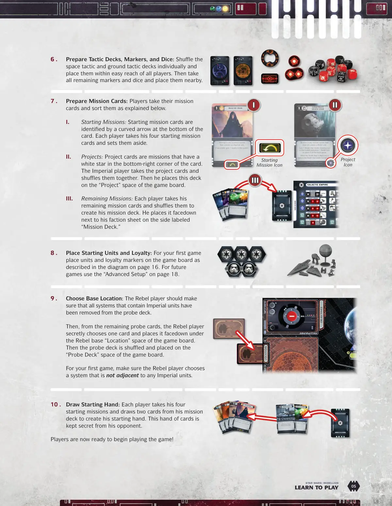
6.
准备战术牌组、指示物和骰子：分别洗混太空战术牌组和地面战术牌组，并将它们放置在所有玩家容易触及的位置。然后取走所有剩余的指示物和骰子，并将它们放置在附近。
7.
准备任务卡：玩家拿取他们的任务卡，并按照下文说明进行分类。
I.
起始任务：起始任务卡通过卡片底部的弯曲箭头标识。每位玩家拿取他的四张起始任务卡，并将它们放在一边。
II.
项目：项目卡片是在卡片右下角有白色星星的任务。帝国玩家拿取项目卡片并将它们洗混在一起。然后将这副牌放置在游戏版的"项目"区域上。
III.
剩余任务：每位玩家拿取他剩余的任务卡，并将它们洗混以创建他的任务牌组。他将这副牌面朝下放置在他的派系卡旁边标记为"任务牌组"的一侧。
8.
放置起始单位和忠诚度：对于你的第一局游戏，按照第16页图示在游戏版上放置单位和忠诚度指示物。对于未来的游戏，使用第18页的"高级设置"。
9.
选择基地位置：反抗军玩家应确保所有包含帝国单位的系统已从探测牌组中移除。
然后，从剩余的探测卡中，反抗军玩家秘密选择一张卡片，并将其面朝下放置在游戏版上反抗军基地"位置"区域下方。然后将探测牌组洗混，并放置在游戏版的"探测牌组"区域上。
对于你的第一局游戏，确保反抗军玩家选择一个不与任何帝国单位相邻的系统。
- 摸起始手牌：每位玩家拿取他的四张起始任务，并从他的任务牌组中摸两张牌以创建他的起始手牌。这副手牌应对对手保密。
玩家现在可以开始游戏了！
项目图标
© FFG
© LFL
以恐惧统治
在任何包含帝国单位的人口稠密系统中尝试。
如果成功，在此系统中获得1点忠诚度。
© FFG
© LFL
建造
死星
在任何不包含反抗军单位的偏远系统中结算。
在此系统中获得1个建造中的死星，并将1个死星放置在建造队列的第3格。
当死星部署时，它将替换建造中的死星。
起始任务图标
-
-
-
-
突击航母
TIE战斗机
储存
星球毁灭者
超级星球毁灭者
银河帝国
死星
DE
在...之下
任务牌组
© FFG
© & TM Lucasfilm Ltd.
© FFG
© LFL
收集情报
在任何反抗军系统中尝试。
如果成功，为反抗军基地的每4个反抗军单位摸1张探测卡（至少1张）。
© FFG
© LFL
捕获叛军
特工
针对包含帝国单位的系统中的叛军领导人发起尝试。
如果成功，捕获该领导人。
© FFG
© LFL
研发
在任何具有帝国忠诚度的系统中执行。选择以下一项：
• 摸2张项目卡。选择1张保留，并将另一张置于牌库底部。
• 从该系统中移除一个破坏标记，并摸1张项目卡。
© FFG
© LFL
恐怖统治
在任何包含帝国单位的人口稠密系统中发起尝试。
如果成功，在该系统中获得1点忠诚度。
© FFG
© LFL
权力展示
在任何人口稠密系统中发起尝试。
如果成功，在该系统中获得2点忠诚度。
© FFG
© LFL
解决延误
在任何帝国系统中执行。
使用该系统的资源图标和数字，将单位放置在建造队列上。
© FFG
© LFL
归航信标
针对被捕获的领导人发起尝试。
如果成功，该领导人被营救。叛军玩家必须将该领导人放置在叛军基地区域内的任何系统中。
© FFG
© LFL
黑暗面
诱惑
针对被捕获的领导人发起尝试。在此尝试中计算所有技能图标。
如果成功，将黑暗面诱惑环附加到叛军领导人身上。
在游戏剩余时间内，他成为帝国领导人。如果成功针对卢克·天行者，叛军玩家失去1点声誉。
© FFG
© LFL
权力展示
在任何人口稠密系统中发起尝试。
如果成功，在该系统中获得2点忠诚度。
I
II
III
星球大战：叛乱
入门指南
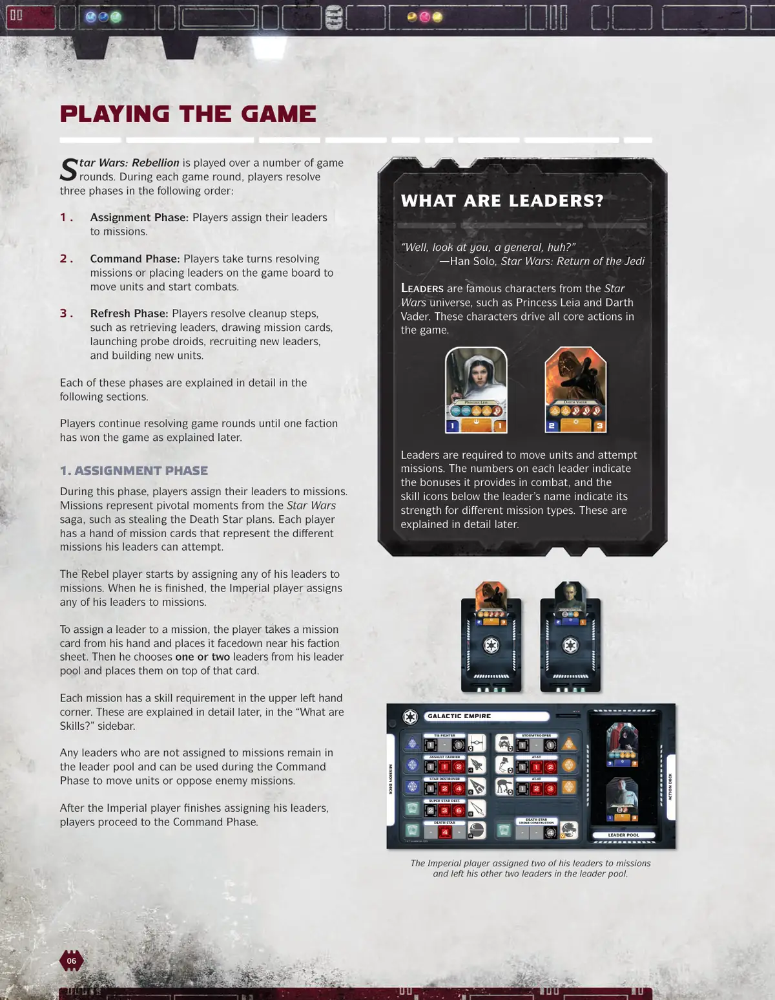
游戏进行
星球大战：叛军是在多个游戏轮次中进行。在每个游戏轮次中，玩家按以下顺序解决三个阶段：
分配阶段：玩家将他们的领导者分配到任务中。
指挥阶段：玩家轮流解决任务或将领导者放置在游戏版图上以移动单位并开始战斗。
刷新阶段：玩家解决清理步骤，例如取回领导者、抽取任务卡、发射探测机器人、招募新领导者和建造新单位。
这些阶段在以下各节中有详细解释。
玩家继续解决游戏轮次，直到一方阵营赢得游戏，如后文所述。
1. 分配阶段
在此阶段，玩家将他们的领导者分配到任务中。
任务代表星球大战传奇故事中的关键时刻，例如偷取死星计划。每个玩家有一组任务卡，代表其领导者可以尝试的不同任务。
叛军玩家首先开始将他的任何领导者分配到任务中。完成后，帝国玩家将他的任何领导者分配到任务中。
要将领导者分配到任务，玩家从手牌中取出一张任务卡，并将其面朝下放置在其阵营表旁边。然后他从领导者池中选择一个或两个领导者，并将它们放在那张卡牌的顶部。
每个任务在左上角都有一项技能要求。这些在后面的"什么是技能？"侧边栏中有详细解释。
任何未被分配到任务的领导者仍留在领导者池中，可以在指挥阶段用于移动单位或反对敌方任务。
在帝国玩家完成分配他的领导者后，玩家进入指挥阶段。
帝国玩家将他的两个领导者分配到任务中，并将他的另外两个领导者留在领导者池中。
-
-
-
-
-
-
突击航母
TIE战斗机
暴风兵
歼星舰
AT-ST
AT-AT
超级歼星舰
银河帝国
领导者池
死星
死星
建造中
任务牌库
行动牌库
© FFG
© & TM Lucasfilm Ltd.
高级莫夫·塔金
达斯·维达
皇帝帕尔帕廷
将军塔格
什么是领导者？
"哦，看看你，将军，嗯？"
——汉·索罗，《星球大战：绝地归来》
领导者是星球大战宇宙中的著名角色，如莱娅公主和达斯·维达。这些角色驱动游戏中的所有核心行动。
领导者是移动单位和尝试任务的必需品。每个领导者上的数字表示其在战斗中提供的加成，领导者姓名下方的技能图标表示其对不同任务类型的强度。这些在后面有详细解释。
莱娅公主
达斯·维达
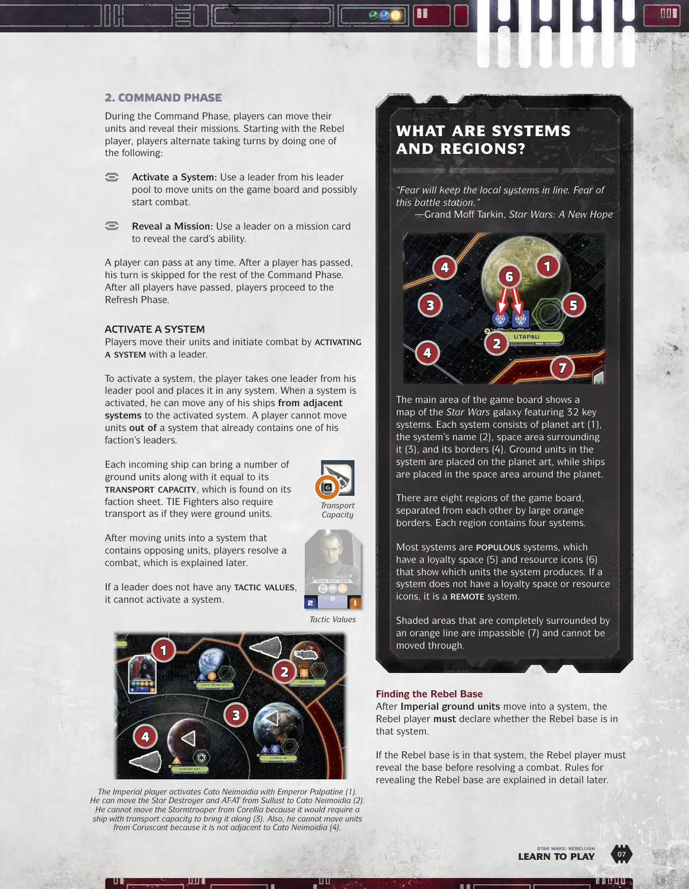
2. 指挥阶段
在指挥阶段，玩家可以移动他们的单位并揭示他们的任务。从叛军玩家开始，玩家轮流执行以下操作之一：
激活一个系统：使用其领导者池中的领导者来移动游戏版图上的单位，并可能开始战斗。
揭示一个任务：使用任务卡上的领导者来揭示卡牌能力。
玩家可以在任何时候跳过。玩家跳过后，其在指挥阶段的剩余回合将被跳过。
所有玩家都跳过后，玩家进入刷新阶段。
激活一个系统
玩家通过用领导者激活一个系统来移动他们的单位并发起战斗。
要激活一个系统，玩家从其领导者池中取出一个领导者，并将其放置在任何系统中。当一个系统被激活时，玩家可以将他们的任何飞船从相邻系统移动到被激活的系统。玩家不能将单位移出已经包含其派系领导者的系统。
每艘 incoming 飞船可以携带与其运输能力相等的地面单位数量，该数值在其派系表上显示。TIE 战斗机也需要运输，就像它们是地面单位一样。
在将单位移动到包含敌方单位的系统后，玩家会进行一次战斗，这将在后面解释。
如果领导者没有任何战术值，则不能激活系统。
运输能力
战术值
寻找叛军基地
帝国地面单位移动到一个系统后，叛军玩家必须宣布叛军基地是否在该系统中。
如果叛军基地在该系统中，叛军玩家必须在解决战斗前揭示基地。揭示叛军基地的规则将在后面详细解释。
皇帝 帕尔帕廷
帝国玩家用皇帝 帕尔帕廷(1)激活卡托·奈莫伊迪亚系统。他可以将歼星舰和 AT-AT 从萨卢斯特移动到卡托·奈莫伊迪亚系统(2)。他不能从科雷利亚移动暴风兵，因为这需要一艘具有运输能力的飞船来搭载它(3)。此外，他也不能从科洛桑移动单位，因为它不与卡托·奈莫伊迪亚系统相邻(4)。
什么是系统和区域？
"恐惧将使当地系统保持秩序。对这个太空站的恐惧。"
——高级官员 塔金，《星球大战：新希望》
游戏版图的主要区域展示了《星球大战》星系地图，包含32个关键系统。每个系统由行星艺术(1)、系统名称(2)、环绕它的太空区域(3)及其边界(4)组成。系统中的地面单位放置在行星艺术上，而飞船则放置在行星周围的太空区域中。
游戏版图有八个区域，彼此之间由大的橙色边界分隔。每个区域包含四个系统。
大多数系统是人口稠密的系统，它们有一个忠诚度空间(5)和资源图标(6)，显示该系统生产哪些单位。如果一个系统没有忠诚度空间或资源图标，它就是一个偏远系统。
完全被橙色线条包围的阴影区域是不可通过的(7)，不能穿过。
STAR WARS: REBELLION
游戏入门
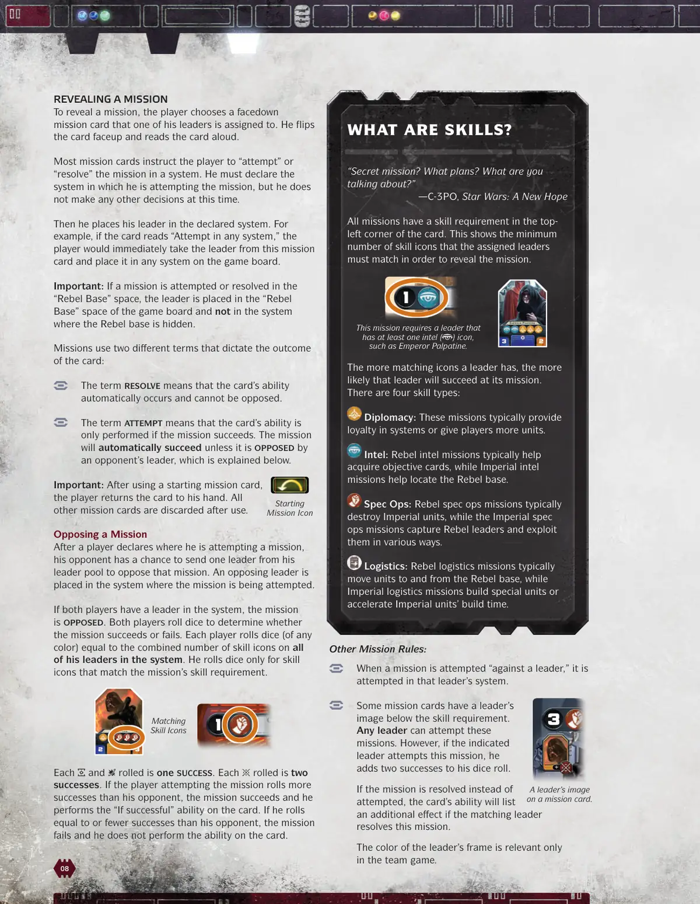
其他任务规则：
当任务"针对领袖"进行时，该任务会在该领袖的星系中进行。
一些任务卡在技能要求下方有领袖的图像。
任何领袖都可以尝试这些任务。然而，如果指定的领袖尝试此任务，他会在他的骰子投掷结果上增加两次成功。
如果任务被"解决"而非"尝试"，卡牌能力会列出如果匹配的领袖解决此任务时的额外效果。
领袖边框的颜色仅在团队游戏中相关。
任务卡上的领袖图像。
揭示任务
要揭示任务，玩家选择一张他的一位领袖被分配到的背面朝上的任务卡。他将卡片翻到正面并大声读出卡片内容。
大多数任务卡指示玩家在某个星系中"尝试"或"解决"任务。他必须声明他尝试任务的星系，但此时不做其他决定。
然后他将他的领袖放置在声明的星系中。例如，如果卡牌上写着"在任何星系中尝试"，玩家会立即从此任务卡中取出领袖并将其放置在游戏版图上的任何星系中。
重要：如果任务在"反抗军基地"区域中被尝试或解决，领袖会被放置在游戏版图的"反抗军基地"区域中，而不是在反抗军基地隐藏的星系中。
任务使用两个不同的术语来决定卡牌的结果：
术语"解决"意味着卡牌能力自动发生且不能被反对。
术语"尝试"意味着只有当任务成功时，卡牌能力才会执行。除非被对手的领袖反对（下文解释），否则任务将自动成功。
重要：使用起始任务卡后，玩家将卡片返回到手牌。所有其他任务卡在使用后弃置。
反对任务
在玩家声明他尝试任务的位置后，他的对手有机会从他领袖池中派出一位领袖去反对该任务。一位反对领袖会被放置在任务被尝试的星系中。
如果两位玩家在星系中都有领袖，则任务被反对。两位玩家投掷骰子以确定任务成功还是失败。每位玩家投掷骰子（任何颜色），数量等于他在该星系中所有领袖上的技能图标总数。他只为与任务技能要求匹配的技能图标投掷骰子。
每次投出和各算一次成功。每次投出算两次成功。如果尝试任务的玩家投出的成功数多于他的对手，则任务成功，他执行卡牌上的"如果成功"能力。如果他投出的
等于或少于对手的成功次数，任务失败，且他不执行卡牌上的能力。
开始
任务图标
什么是技能？
"秘密任务？什么计划？你在说什么？"
——C-3PO，《星球大战：新希望》
所有卡牌左上角都有技能要求。这显示了指派的领导者必须匹配的最少技能图标数量，才能揭示任务。
皇帝帕尔帕廷
此任务需要一个至少有一个情报（）图标的领导者，例如皇帝帕尔帕廷。
领导者拥有的匹配图标越多，该领导者就越有可能成功完成任务。
有四种技能类型：
外交：这些任务通常提供忠诚度或在系统中给予玩家更多单位。
情报：反抗军情报任务通常帮助获取目标卡牌，而帝国情报任务帮助定位反抗军基地。
特种作战：反抗军特种作战任务通常摧毁帝国单位，而帝国特种作战任务俘虏反抗军领导者并以各种方式利用他们。
后勤：反抗军后勤任务通常将单位移动到反抗军基地或从反抗军基地移出，而帝国后勤任务建造特殊单位或加速帝国单位的建造时间。
匹配技能图标
达斯·维达
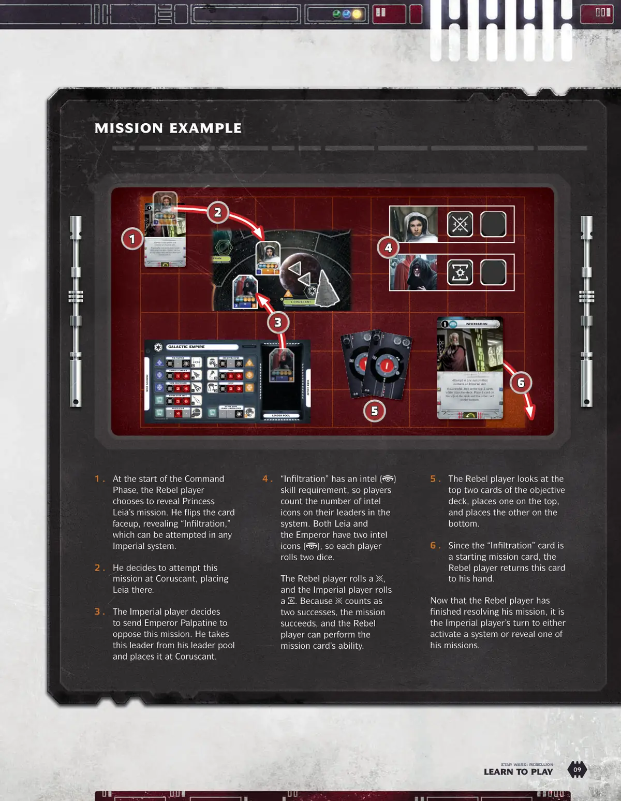
任务示例
- 在指挥阶段开始时，叛军玩家选择揭示莉亚公主的任务。他将卡牌翻面，显示"渗透"，该任务可以在任何帝国系统中尝试。
- 他决定在科洛桑尝试此任务，将莉亚放置在那里。
- 帝国玩家决定派遣皇帝帕尔帕廷来反对此任务。他从他的领导者池中取出这个领导者，并将其放置在科洛桑。
- "渗透"有情报()技能要求，因此玩家计算他们在该系统中领导者上的情报图标数量。莉亚和皇帝各有两个情报图标()，因此每位玩家掷两个骰子。叛军玩家掷出，帝国玩家掷出。由于算作两次成功，任务成功，叛军玩家可以执行任务卡的能力。
- 叛军玩家查看目标牌库顶部的两张牌，将一张放在顶部，另一张放在底部。
- 由于"渗透"卡牌是起始任务卡牌，叛军玩家将此牌返回到他的手牌中。
既然叛军玩家已经完成了解决他的任务，轮到帝国玩家激活一个系统或揭示他的一个任务。
© FFG
© LFL
在任何包含帝国单位的系统中尝试。
如果成功，查看目标牌库顶部的2张牌。将1张牌放在牌库顶部，另一张牌放在底部。
渗透
-
-
-
-
-
-
突击航母
TIE战斗机
暴风兵
歼星舰
AT-ST
AT-AT
超级歼星舰
银河帝国
领导者池
死星
死星
建造中
任务牌库
行动牌库
© FFG
© & TM Lucasfilm Ltd.
皇帝帕尔帕廷
莉亚公主
皇帝帕尔帕廷
© FFG
© LFL
在任何包含帝国单位的系统中尝试。
如果成功，查看目标牌库顶部的2张牌。将1张牌放在牌库顶部，另一张牌放在底部。
渗透
莉亚公主
星球大战：叛乱
游戏入门
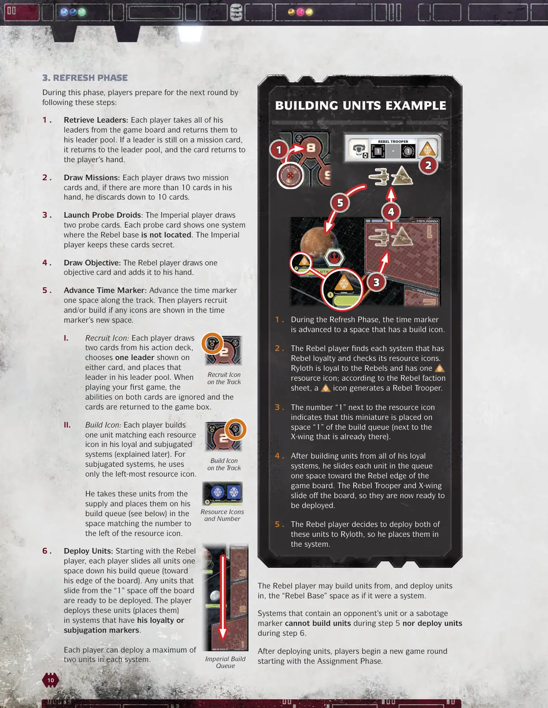
3. 整理阶段
在此阶段，玩家通过以下步骤为下一轮做准备：
1 .
取回领袖：每位玩家将其所有的领袖从游戏版图上取回，并放回其领袖池。如果领袖仍在任务卡上，则该领袖返回领袖池，卡牌返回玩家手牌。
2 .
抽取任务：每位玩家抽取两张任务卡，如果其手牌超过10张，则弃牌至10张。
3 .
部署探测机器人：帝国玩家抽取两张探测卡。每张探测卡显示一个义军基地不在的星系。帝国玩家将这些牌保密。
4 .
抽取目标：义军玩家抽取一张目标卡并将其加入手牌。
5 .
推进时间标记：将时间标记沿轨道推进一格。然后，如果时间标记的新位置显示有任何图标，玩家进行招募和/或建造。
I.
招募图标：每位玩家从其行动牌库抽取两张牌，选择任一牌上显示的一位领袖，并将该领袖放入其领袖池。进行第一局游戏时，忽略两张牌上的能力，并将牌放回游戏盒。
II.
建造图标：每位玩家在其忠诚和被征服的系统中（后文解释）为每个资源图标建造一个单位。对于被征服的系统，他仅使用最左侧的资源图标。他从供应中取出这些单位，并将其放置在其建造队列（见下文）中与资源图标左侧数字对应的格位。
6 .
部署单位：从义军玩家开始，每位玩家将其建造队列中的所有单位向下滑动一格（朝向其版图边缘）。从"1"格滑出版图的单位准备就绪，可以部署。玩家将这些单位部署（放置）在其有忠诚或被征服标记的系统中。
每位玩家在每个系统中最多可部署两个单位。
资源图标
和数字
轨道上的
招募图标
轨道上的
建造图标
义军玩家可以在"义军基地"格位建造单位和部署单位，就像对待一个系统一样。
包含对手单位或破坏标记的系统在第5步不能建造单位，在第6步不能部署单位。
部署单位后，玩家开始新一轮游戏，从分配阶段开始。
帝国建造队列
建造单位示例
1 . 在整理阶段，时间标记被推进到一个有建造图标的格位。
2 . 义军玩家找到每个有义军忠诚的系统并检查其资源图标。
Ryloth忠诚于义军，有一个资源图标；根据义军派系表，一个
图标生成一个义军步兵。
- 资源图标旁边的数字"1"表示这个小模型被放置在建造队列的"1"号位置（旁边是已经存在的X翼战机）。
- 在从所有忠诚系统建造单位后，他将队列中的每个单位向游戏板的义军边缘方向滑动一格。义军士兵和X翼战机滑出版图，因此它们现在可以部署了。
- 义军玩家决定将这两个单位都部署到罗思星（Ryloth），因此他将它们放置在该系统中。
义军士兵
气垫车
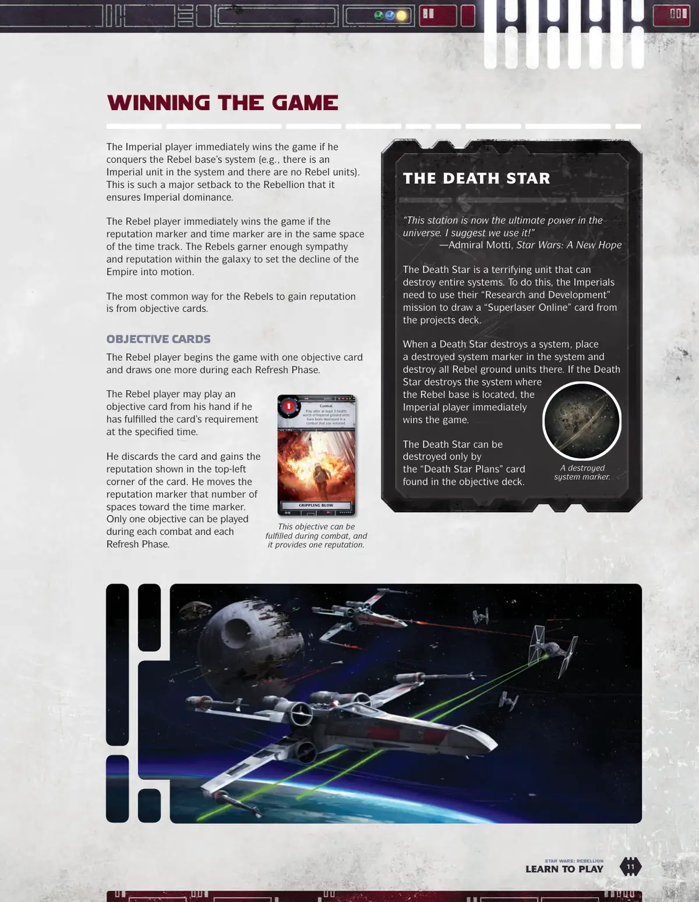
赢得游戏
如果帝国玩家征服了叛军基地的星系（例如，该星系中有一个帝国单位且没有叛军单位），则帝国玩家立即赢得游戏。这对叛军来说是如此重大的挫折，确保了帝国的统治地位。
如果声誉标记和时间标记位于时间轨道的同一格中，叛军玩家立即赢得游戏。叛军在银河系内获得了足够的同情心和声誉，从而开启了帝国衰落的进程。
叛军获得声誉最常见的方式来自目标卡牌。
目标卡牌
叛军玩家在游戏开始时拥有一张目标卡牌，并在每个刷新阶段再抽取一张。
如果叛军玩家在指定时间满足了卡牌的要求，他可以打出手中的一张目标卡牌。
他弃掉该卡牌并获得卡牌左上角所示的声誉。他将声誉标记向时间标记移动相应的格数。
在每次战斗和每个刷新阶段期间，只能打出一张目标卡牌。
© FFG
© LFL
致命一击
战斗
在你发起的战斗中，至少摧毁了3点生命值的帝国地面单位后打出。
此目标可以在战斗期间完成，并提供1点声誉。
死星
"这个站现在是宇宙的终极力量。我建议我们使用它！"
——莫蒂上将，《星球大战：新希望》
死星是一个可以摧毁整个星系的恐怖单位。要做到这一点，帝国玩家需要使用他们的"研发"任务从项目牌库中抽取一张"超级激光已上线"卡牌。
当死星摧毁一个星系时，在该星系中放置一个被摧毁星系标记，并摧毁那里所有的叛军地面单位。如果死星摧毁了叛军基地所在的星系，帝国玩家立即赢得游戏。
死星只能通过目标牌库中的"死星计划"卡牌来摧毁。
一个被摧毁的星系标记。
星球大战：叛军
游戏入门
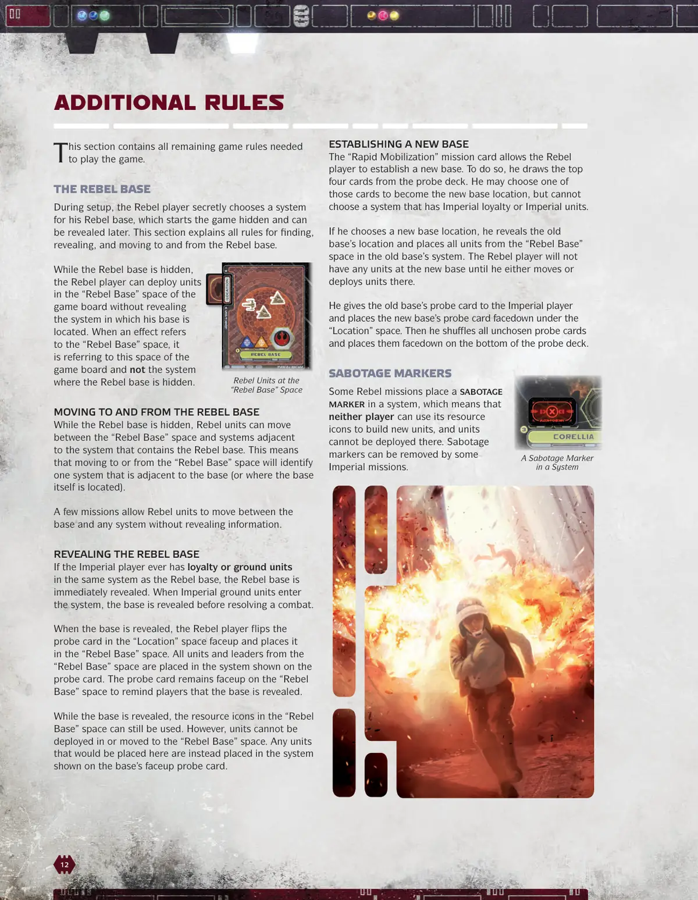
额外规则
本节包含了玩这款游戏所需的所有剩余规则。
反叛基地
在设置阶段，反叛玩家秘密选择一个系统作为他的反叛基地，该基地在游戏开始时是隐藏的，之后可以揭示。本节解释了寻找、揭示以及前往和离开反叛基地的所有规则。
当反叛基地隐藏时，反叛玩家可以在游戏版图的"反叛基地"区域部署单位，而无需揭示其基地所在的系统。当某个效果提到"反叛基地"区域时，它指的是游戏版图的这个区域，而不是反叛基地隐藏的那个系统。
前往和离开反叛基地
当反叛基地隐藏时，反叛单位可以在"反叛基地"区域和包含反叛基地的系统之间的相邻系统之间移动。这意味着前往或离开"反叛基地"区域将识别出一个与基地相邻的系统（或基地所在的系统）。
一些任务允许反叛单位在基地和任何系统之间移动，而无需揭示信息。
揭示反叛基地
如果帝国玩家在任何时候有忠诚单位或地面单位与反叛基地在同一系统，反叛基地会立即被揭示。当帝国地面单位进入该系统时，基地会在解决战斗前被揭示。
当基地被揭示时，反叛玩家将"位置"区域的探测卡翻面，并将其放置在"反叛基地"区域。所有来自"反叛基地"区域的单位和领导者都被放置在探测卡上显示的系统里。探测卡保持正面朝上放在"反叛基地"区域，提醒玩家基地已被揭示。
当基地被揭示时，"反叛基地"区域的资源图标仍然可以使用。但是，单位不能在"反叛基地"区域部署或移动到该区域。任何原本要放置在此处的单位改为放置在基地正面朝上的探测卡上显示的系统里。
建立新基地
"快速动员"任务卡允许反叛玩家建立一个新基地。为此，他从探测牌库顶抽取四张牌。他可以选择其中一张牌作为新基地位置，但不能选择有帝国忠诚度或帝国单位的系统。
如果他选择了新基地位置，他会揭示旧基地的位置，并将"反叛基地"区域的所有单位放置在旧基地的系统里。反叛玩家直到他移动或部署单位到新基地之前，新基地不会有任何单位。
他将旧基地的探测卡交给帝国玩家，并将新基地的探测牌面朝下放在"位置"区域下方。然后他洗混所有未被选择的探测牌。
并将它们面朝下放置在探测牌库的底部。
破坏标记
一些叛军任务会在一个星系中放置一个破坏标记，这意味着双方玩家都不能使用其资源图标来建造新单位，并且单位无法在那里部署。破坏标记可以被一些帝国任务移除。
星系中的
破坏标记
位于"叛军基地"
格的叛军单位
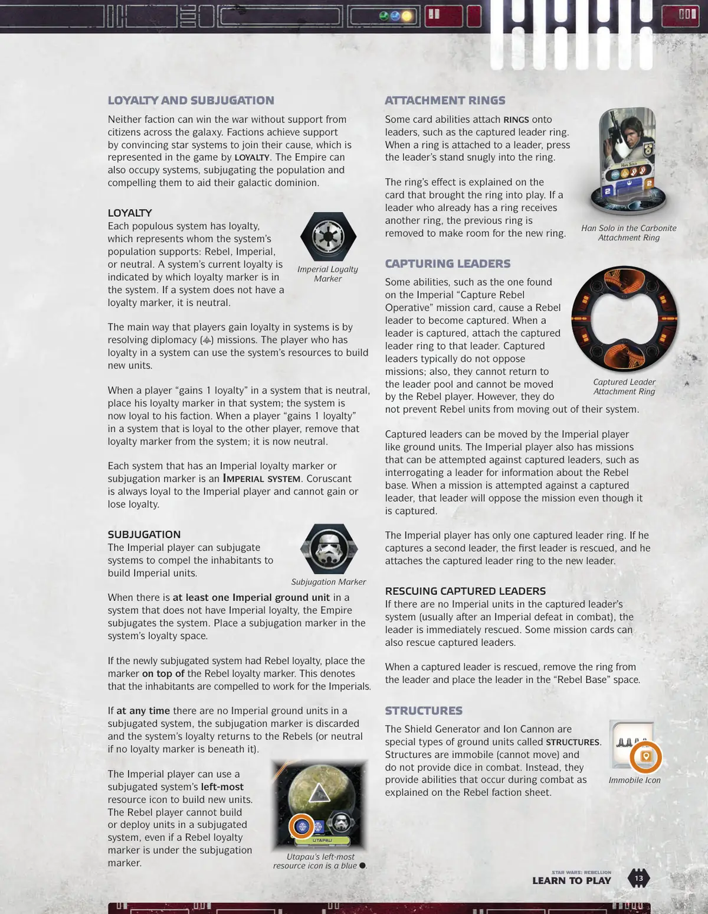
忠诚与征服
没有整个银河系公民的支持，任何派系都无法赢得战争。派系通过说服星系加入他们的事业来获得支持，这在游戏中以忠诚度表示。帝国也可以占领星系，征服其人口，迫使他们帮助其银河统治。
忠诚
每个有人口居住的星系都有忠诚度，代表该星系人口支持的对象：反抗军、帝国或中立。星系的当前忠诚度由该星系中的忠诚度指示物表示。如果一个星系没有忠诚度指示物，则它是中立的。
玩家在星系中获得忠诚度的主要方式是通过解决外交（）任务。在星系中有忠诚度的玩家可以使用该星系的资源来建造新单位。
当玩家在中立的星系中"获得1点忠诚度"时，将他的忠诚度指示物放入该星系；该星系现在忠诚于他的派系。当玩家在忠诚于对手的星系中"获得1点忠诚度"时，从该星系移除那个忠诚度指示物；该星系现在变为中立。
每个拥有帝国忠诚度指示物或征服指示物的星系都是帝国星系。科洛桑（Coruscant）始终忠诚于帝国玩家，不能获得或失去忠诚度。
征服
帝国玩家可以征服星系，迫使居民建造帝国单位。
当一个没有帝国忠诚度的星系中至少有一个帝国地面单位时，帝国征服该星系。在该星系的忠诚度区域放置一个征服指示物。
如果新征服的星系有反抗军忠诚度，将指示物放在反抗军忠诚度指示物上方。这表示居民被迫为帝国工作。
如果任何时候被征服的星系中没有帝国地面单位，征服指示物被弃置，星系的忠诚度恢复为反抗军（或者如果没有忠诚度指示物在下方，则恢复为中立）。
帝国玩家可以使用被征服星系的左侧资源图标来建造新单位。
反抗军玩家不能在被征服的星系中建造或部署单位，即使反抗军忠诚度指示物在征服指示物下方。
帝国忠诚度指示物
征服指示物
附件环
一些卡牌能力会将环附着在领袖身上，例如被俘领袖环。当环附着在领袖身上时，将领袖的底座紧紧按入环中。环的效果在将该环引入游戏的卡牌上说明。如果已经有一个环的领袖获得另一个环，则移除前一个环以为新环腾出空间。
俘获领袖
一些能力，例如帝国"俘获反抗军特工"任务卡上的能力，会导致反抗军
leader to become captured. When a
leader is captured, attach the captured
leader ring to that leader. Captured
leaders typically do not oppose
missions; also, they cannot return to
the leader pool and cannot be moved
by the Rebel player. However, they do
not prevent Rebel units from moving out of their system.
Captured leaders can be moved by the Imperial player
like ground units. The Imperial player also has missions
that can be attempted against captured leaders, such as
interrogating a leader for information about the Rebel
base. When a mission is attempted against a captured
leader, that leader will oppose the mission even though it
is captured.
The Imperial player has only one captured leader ring. If he
captures a second leader, the first leader is rescued, and he
attaches the captured leader ring to the new leader.
搭救被俘的领袖
如果被俘领袖的系统中没有帝国单位（通常是在战斗中帝国战败后），该领袖会被立即搭救。一些任务卡也可以搭救被俘的领袖。
当被俘的领袖被搭救时，从该领袖上取下戒指，并将该领袖放置在"叛军基地"区域。
建筑物
护盾发生器和离子炮是被称为建筑物的特殊类型地面单位。
建筑物是不可移动的（不能移动）且在战斗中不提供骰子。相反，它们提供在叛军派系表上解释的战斗中发生的能力。
汉·索罗在碳酸盐中
附件戒指
被俘领袖
附件戒指
不可移动图标
乌塔帕的最左侧资源图标是蓝色 。
星球大战：叛军
游戏入门
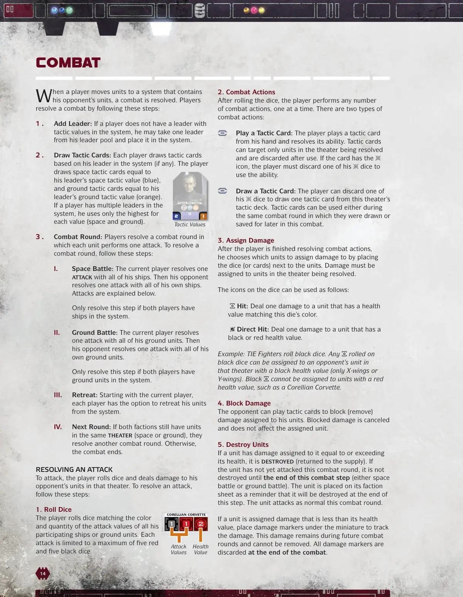
战斗
当玩家将单位移动到一个包含其对手单位的系统时，就会进行战斗。玩家通过以下步骤解决战斗：
添加领袖：如果玩家在系统中没有具有战术数值的领袖，他可以从其领袖池中取出一个领袖并将其放置在该系统中。
抽取战术卡：每个玩家根据其在系统中的领袖（如果有）抽取战术卡。玩家抽取的太空战术卡数量等于其领袖的太空战术值（蓝色），地面战术卡数量等于其领袖的地面战术值（橙色）。
如果玩家在系统中有多个领袖，他只使用每个数值（太空和地面）中最高的一个。
战斗轮：玩家解决一个战斗轮，其中每个单位执行一次攻击。要解决一个战斗轮，请遵循以下步骤：
I. 太空战斗：当前玩家使用其所有舰船解决一次攻击。然后其对手使用其所有舰船解决一次攻击。攻击将在下面解释。
仅当两个玩家在系统中都有舰船时才执行此步骤。
II. 地面战斗：当前玩家使用其所有地面单位解决一次攻击。然后其对手使用其所有地面单位解决一次攻击。
仅当两个玩家在系统中都有地面单位时才执行此步骤。
III. 撤退：从当前玩家开始，每个玩家可以选择将其单位从系统中撤退。
IV. 下一轮：如果两个派系在同一个战区（太空或地面）仍然有单位，他们将解决另一个战斗轮。否则，战斗结束。
解决攻击
要攻击，玩家掷骰子并对该战区中对手的单位造成伤害。要解决攻击，请遵循以下步骤：
1. 掷骰子
玩家掷骰子，颜色和数量与其所有参与攻击的舰船或地面单位的攻击值相匹配。每次攻击最多限制为五个红色和五个黑色骰子。
战术值
攻击值
生命值
科瑞利亚护卫舰
2. 战斗行动
掷骰子后，玩家可以执行任意数量的战斗行动，一次执行一个。有两种类型的战斗行动：
b
b
使用战术卡：玩家从手牌中使用一张战术卡并解决其能力。战术卡只能针对正在解决的战区中的单位，使用后即被弃置。如果卡牌有图标，玩家必须弃置一个其骰子才能使用该能力。
b
b
抽取战术卡：玩家可以弃置一个其骰子，从该战区的战术牌堆中抽取一张战术卡。战术卡可以在抽取的同一战斗轮中使用，也可以留待本次战斗后期使用。
3. 分配伤害
在玩家完成解决战斗行动后，
他通过将骰子（或卡牌）放置在单位旁边来选择
要分配伤害的单位。伤害必须分配给正在解决战区的单位。
骰子上的图标可以按以下方式使用：
命中：对一个具有与该骰子颜色相匹配的生命值
的单位造成一点伤害。
直接命中：对一个具有黑色或红色生命值的单位
造成一点伤害。
示例：TIE战机投掷黑色骰子。任何在黑色骰子上
投出的都可以分配给该战区中对手具有黑色生命值的单位
（只有X翼战机或Y翼战机）。黑色不能分配给具有红色生命值的单位，
例如科瑞利亚巡洋舰。
4. 格挡伤害
对手可以打出战术卡牌来格挡（移除）
分配给他单位的伤害。被格挡的伤害被取消，
不会影响被分配的单位。
5. 摧毁单位
如果一个单位被分配的伤害等于或超过其生命值，
它就被摧毁（返回到补给区）。如果该单位
尚未在本轮战斗中攻击，它不会在本轮战斗步骤结束前被摧毁
（无论是太空战斗还是地面战斗）。将该单位放置在其
派系表上，作为提醒，表示它将在本步骤结束时被摧毁。
该单位在本轮战斗中正常攻击。
如果一个单位被分配的伤害小于其生命值，
将伤害指示物放在模型下方以追踪伤害。此伤害
在未来的战斗轮中持续存在，无法被移除。所有伤害指示物
在战斗结束时被弃置。
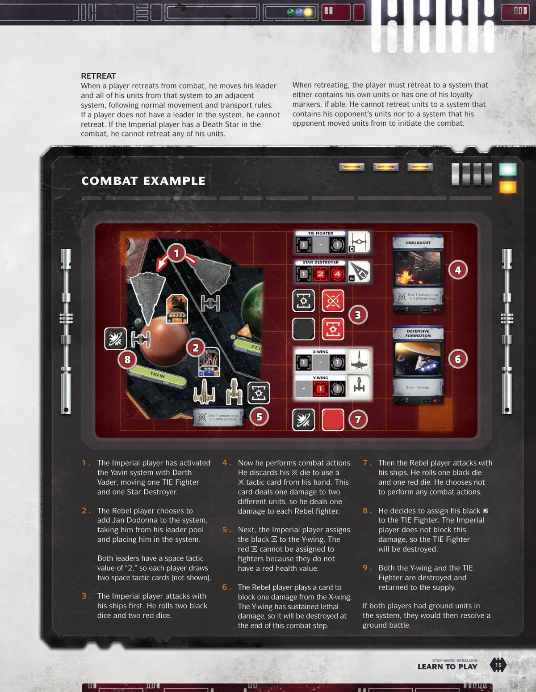
撤退
当玩家从战斗中撤退时，他按照正常的移动和运输规则，将其指挥官和该系统中的所有单位移动到一个相邻的系统。
如果玩家在该系统中没有指挥官，他不能撤退。如果帝国玩家在战斗中有死星，他不能撤退任何单位。
撤退时，玩家必须撤退到一个包含他自己单位或有一个他忠诚度标记的系统（如果可能）。他不能将单位撤退到包含对手单位的系统，也不能撤退到对手为发起战斗而移动单位出来的系统。
战斗示例
- 帝国玩家激活了雅文系统，带着达斯·维达，移动了一台TIE战斗机和一艘歼星舰。
- 反叛玩家选择将简·多东纳加入该系统，从他的指挥官池中取出他并将其放置在该系统中。
两位指挥官的太空战术值都是"2"，因此每位玩家抽取两张太空战术卡（未显示）。
- 帝国玩家首先用他的飞船攻击。他掷出两个黑色骰子和两个红色骰子。
- 现在他执行战斗行动。他弃掉他的骰子，使用手牌中的一张战术卡。这张卡对两个不同单位各造成一点伤害，因此他对每架反叛战斗机各造成一点伤害。
- 接着，帝国玩家将黑色分配给Y翼战斗机。红色不能分配给战斗机，因为它们没有红色生命值。
- 反叛玩家打出一张卡来阻止X翼受到的一点伤害。Y翼已受到致命伤害，因此它将在本次战斗步骤结束时被摧毁。
- 然后，反叛玩家用他的飞船攻击。他掷出一个黑色骰子和一个红色骰子。他选择不执行任何战斗行动。
- 他决定将他的黑色分配给TIE战斗机。帝国玩家没有阻止这个伤害，因此TIE战斗机将被摧毁。
- Y翼和TIE战斗机都被摧毁并返回到供应区。
如果两位玩家在该系统中都有地面单位，他们接下来将进行一场地面战斗。
达斯·维达
简·多东纳
© FFG
© LFL
防御阵型
阻止1点伤害。
© FFG
© LFL
猛攻
对最多2艘不同飞船造成1点伤害。
© FFG
© LFL
对最多2艘不同飞船造成1点伤害。
歼星舰
-
TIE战斗机
-
-
X翼战斗机
Y翼战斗机
星球大战：反抗军
入门指南
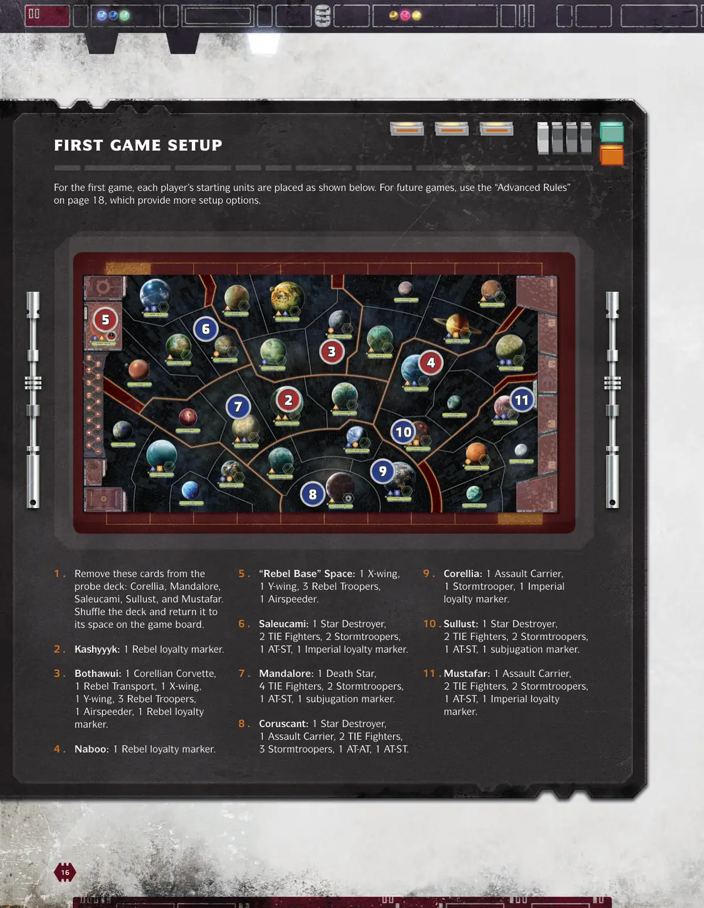
首局设置
对于首局游戏，每位玩家的起始单位按如下所示放置。对于后续游戏，请使用第18页的"进阶规则"，其中提供了更多设置选项。
- 从探测牌库中移除这些卡牌：科雷利亚（Corellia）、曼达洛（Mandalore）、萨卢卡迈（Saleucami）、萨卢斯（Sullust）和穆斯塔法（Mustafar）。洗混牌库并将其放回游戏版图上的对应区域。
- 卡希克（Kashyyyk）：1个忠诚叛军指示物。
- 博萨恩（Bothawui）：1艘科雷利亚巡洋舰（Corellian Corvette）、1艘叛军运输舰（Rebel Transport）、1架X翼战斗机（X-wing）、1架Y翼战斗机（Y-wing）、3名叛军士兵（Rebel Troopers）、1架气垫飞行器（Airspeeder）、1个忠诚叛军指示物。
- 纳布（Naboo）：1个忠诚叛军指示物。
- "叛军基地"区域：1架X翼战斗机、1架Y翼战斗机、3名叛军士兵、1架气垫飞行器。
- 萨卢卡迈（Saleucami）：1艘歼星舰（Star Destroyer）、2架TIE战斗机、2名暴风兵、1台AT-ST步行机、1个忠诚帝国指示物。
- 曼达洛（Mandalore）：1颗死星（Death Star）、4架TIE战斗机、2名暴风兵、1台AT-ST步行机、1个征服标记（subjugation marker）。
- 科洛桑（Coruscant）：1艘歼星舰、1艘突击航空母舰（Assault Carrier）、2架TIE战斗机、3名暴风兵、1台AT-AT步行机、1台AT-ST步行机。
- 科雷利亚（Corellia）：1艘突击航空母舰、1名暴风兵、1个忠诚帝国指示物。
- 萨卢斯（Sullust）：1艘歼星舰、2架TIE战斗机、2名暴风兵、1台AT-ST步行机、1个征服标记。
- 穆斯塔法（Mustafar）：1艘突击航空母舰、2架TIE战斗机、2名暴风兵、1台AT-ST步行机、1个忠诚帝国指示物。
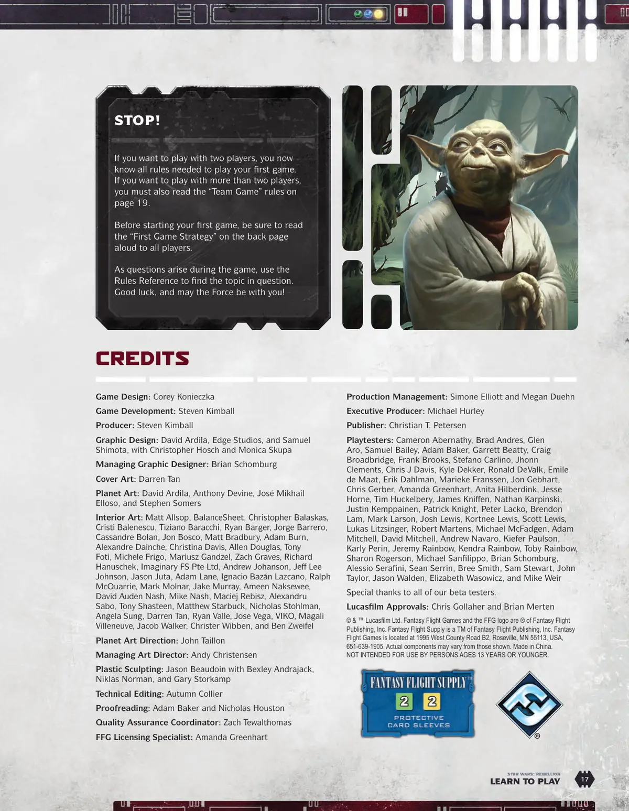
制作人员
游戏设计：Corey Konieczka
游戏开发：Steven Kimball
制作人：Steven Kimball
平面设计：David Ardila, Edge Studios, 和 Samuel Shimota，与 Christopher Hosch 和 Monica Skupa 合作
平面设计总监：Brian Schomburg
封面艺术：Darren Tan
星球艺术：David Ardila, Anthony Devine, José Mikhail Elloso, 和 Stephen Somers
内部艺术：Matt Allsop, BalanceSheet, Christopher Balaskas, Cristi Balenescu, Tiziano Baracchi, Ryan Barger, Jorge Barrero, Cassandre Bolan, Jon Bosco, Matt Bradbury, Adam Burn, Alexandre Dainche, Christina Davis, Allen Douglas, Tony Foti, Michele Frigo, Mariusz Gandzel, Zach Graves, Richard Hanuschek, Imaginary FS Pte Ltd, Andrew Johanson, Jeff Lee Johnson, Jason Juta, Adam Lane, Ignacio Bazán Lazcano, Ralph McQuarrie, Mark Molnar, Jake Murray, Ameen Naksewee, David Auden Nash, Mike Nash, Maciej Rebisz, Alexandru Sabo, Tony Shasteen, Matthew Starbuck, Nicholas Stohlman, Angela Sung, Darren Tan, Ryan Valle, Jose Vega, VIKO, Magali Villeneuve, Jacob Walker, Christer Wibben, 和 Ben Zweifel
星球艺术指导：John Taillon
艺术总监：Andy Christensen
塑料雕塑：Jason Beaudoin 与 Bexley Andrajack, Niklas Norman, 和 Gary Storkamp 合作
技术编辑：Autumn Collier
校对：Adam Baker 和 Nicholas Houston
质量保证协调员：Zach Tewalthomas
FFG 授权专员：Amanda Greenhart
停止！
如果你想进行两人游戏，你现在已知道进行第一局游戏所需的所有规则。
如果你想进行超过两人的游戏，你还必须阅读第 19 页的"团队游戏"规则。
在开始你的第一局游戏前，务必向所有玩家朗读背页的"第一局策略"。
游戏过程中如有疑问，请使用规则参考来查找相关主题。
祝你好运，愿原力与你同在！
制作管理：Simone Elliott 和 Megan Duehn
执行制片人：Michael Hurley
出版商：Christian T. Petersen
测试玩家：Cameron Abernathy, Brad Andres, Glen Aro, Samuel Bailey, Adam Baker, Garrett Beatty, Craig Broadbridge, Frank Brooks, Stefano Carlino, Jhonn Clements, Chris J Davis, Kyle Dekker, Ronald DeValk, Emile de Maat, Erik Dahlman, Marieke Franssen, Jon Gebhart, Chris Gerber, Amanda Greenhart, Anita Hilberdink, Jesse Horne, Tim Huckelbery, James Kniffen, Nathan Karpinski, Justin Kemppainen, Patrick Knight, Peter Lacko, Brendon Lam, Mark Larson, Josh Lewis, Kortnee Lewis, Scott Lewis, Lukas Litzsinger, Robert Martens, Michael McFadgen, Adam Mitchell, David Mitchell, Andrew Navaro, Kiefer Paulson, Karly Perin, Jeremy Rainbow, Kendra Rainbow, Toby Rainbow, Sharon Rogerson, Michael Sanfilippo, Brian Schomburg,
Alessio Serafini, Sean Serrin, Bree Smith, Sam Stewart, John Taylor, Jason Walden, Elizabeth Wasowicz, and Mike Weir
特别感谢我们所有的 beta 测试者。
Lucasfilm 审批：Chris Gollaher 和 Brian Merten
© & ™ Lucasfilm Ltd. Fantasy Flight Games 和 FFG logo 是 Fantasy Flight Publishing, Inc. 的 ®。Fantasy Flight Supply 是 Fantasy Flight Publishing, Inc. 的 TM。Fantasy Flight Games 位于美国明尼苏达州罗斯维尔县西县路 B2 号 1995 号，邮编 55113，电话 651-639-1905。实际组件可能与所示的不同。中国制造。
不适用于 13 岁及以下人士使用。
STAR WARS: REBELLION
游戏入门
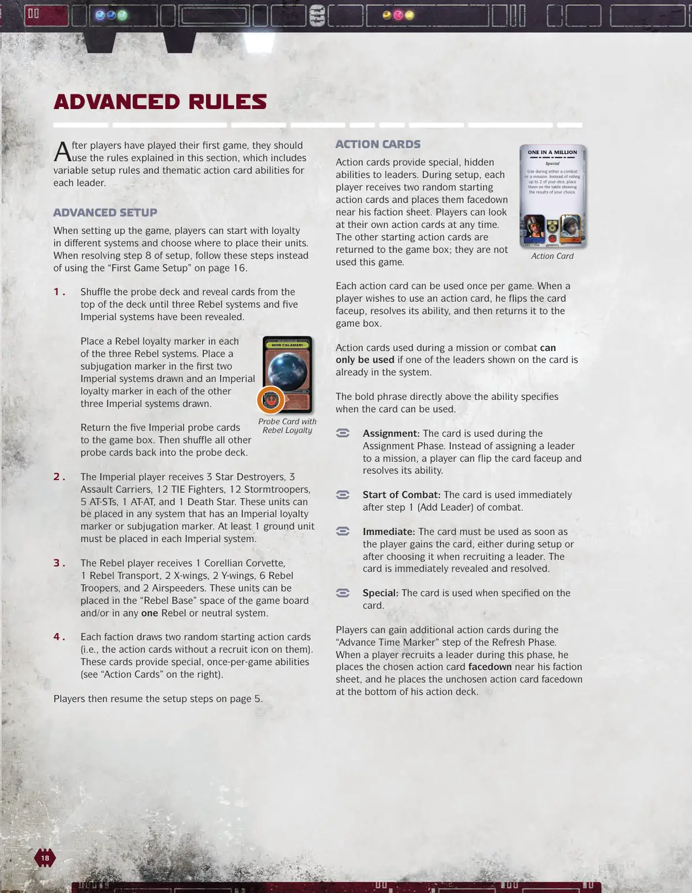
高级规则
在玩家进行了他们的第一局游戏后，他们应该使用本节中解释的规则，其中包括可变的设置规则以及每位领袖的主题性行动卡能力。
高级设置
在设置游戏时，玩家可以在不同的系统中开始忠诚度，并选择放置其单位的位置。在解决设置步骤8时，遵循以下步骤，而不是使用第16页上的"首次游戏设置"。
1.
洗混探测牌库并从牌库顶部翻牌，直到翻出三个叛军系统和五个帝国系统为止。
在每个叛军系统中放置一个叛军忠诚度指示物。在前两个被抽出的帝国系统中放置一个征服指示物，在其他三个被抽出的帝国系统中各放置一个帝国忠诚度指示物。
将五张帝国探测牌放回游戏盒。然后将所有其他探测牌洗回探测牌库中。
2.
帝国玩家获得3艘歼星舰、3艘突击航母、12架TIE战斗机、12名暴风兵、5辆AT-ST步行机、1辆AT-AT步行机和1颗死星。这些单位可以放置在任何有帝国忠诚度指示物或征服指示物的系统中。每个帝国系统中必须至少放置1个地面单位。
3.
叛军玩家获得1艘科瑞利亚护航舰、1艘叛军运输舰、2架X翼战斗机、2架Y翼战斗机、6名叛军士兵和2架气垫飞行器。这些单位可以放置在游戏版图的"叛军基地"区域和/或任何一个叛军或中立系统中。
4.
每个派系抽取两张随机的起始行动卡（即没有招募图标的行动卡）。这些卡牌提供特殊的、每局游戏一次的能力（见右侧的"行动卡"）。
然后玩家继续进行第5页上的设置步骤。
行动卡
行动卡为领袖提供特殊的隐藏能力。在设置阶段，每位玩家获得两张随机的起始行动卡，并将其面朝下放在其派系表旁边。玩家可以随时查看自己的行动卡。
其他起始行动卡被放回游戏盒；它们在本局游戏中不使用。
每张行动卡每局游戏可以使用一次。当玩家想要使用行动卡时，他将卡牌翻面，执行其能力，然后将卡牌放回游戏盒。
在任务或战斗中使用的行动卡，只有当卡牌上显示的领袖之一已经在该系统中时才能使用。
能力上方加粗的短语指定了卡牌的使用时机。
b
b
分配：卡牌在分配阶段使用。玩家可以将卡牌翻面并执行其能力，而不是将领袖分配到任务。
b
b
战斗开始：卡牌在战斗的步骤1（添加领袖）之后立即使用。
b
b
立即：玩家获得卡牌后必须立即使用该卡牌，无论是在设置阶段还是在招募领袖时选择它之后。卡牌立即被揭示并结算。
特殊：卡牌在卡牌上指定时使用。
玩家可以在刷新阶段的"推进时间标记"步骤中获得额外的行动卡牌。当玩家在此阶段招募领袖时，他将所选的行动卡牌面朝下放置在其派系卡旁边，并将未选择的行动卡牌面朝下放置在其行动牌库底部。
© FFG
© LFL
百万分之一
特殊
在战斗或任务期间使用。你可以选择不投掷最多2个骰子，而是将它们放在桌上，显示你选择的结果。
行动卡牌
© FFG
© LFL
蒙·卡拉马里
具有忠诚度的 Rebel 探测卡牌
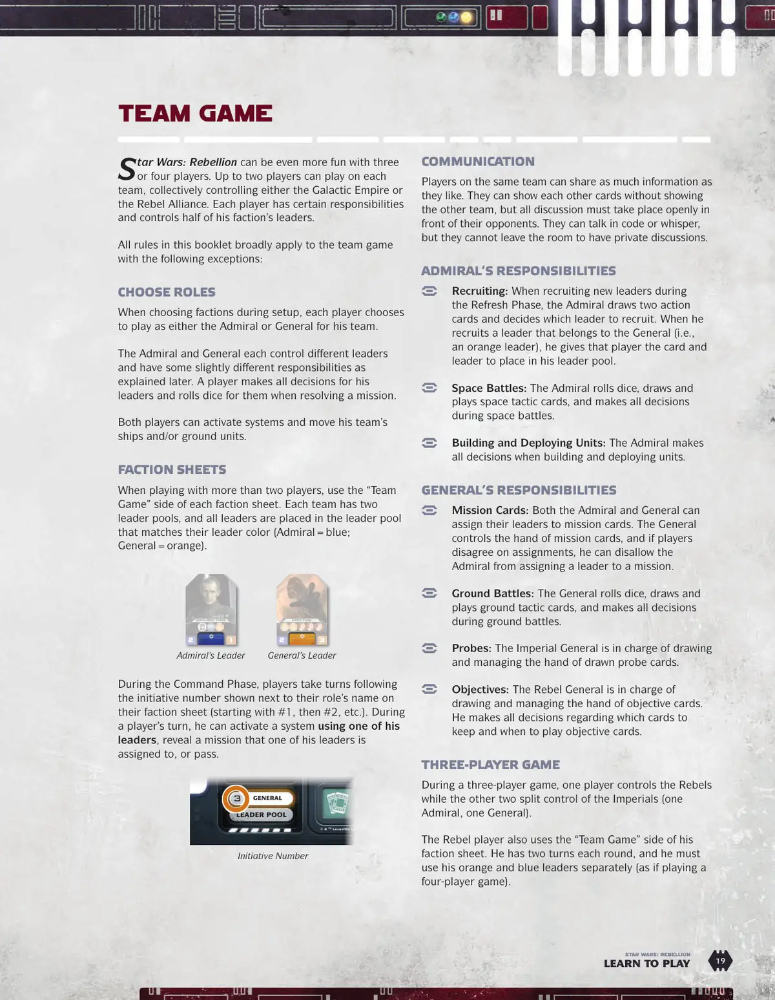
S
tar Wars: Rebellion 可以在三人或四人游戏中更有趣。每队最多可以有两位玩家，共同控制银河帝国或反抗军联盟。每位玩家都有特定的职责，并控制其派系一半的领袖。
本手册中的所有规则 broadly 适用于团队游戏，但有以下例外：
选择角色
在设置阶段选择派系时，每位玩家选择扮演其团队的海军上将或将军。海军上将和将军各自控制不同的领袖，并有一些稍有不同的职责，如后文所述。玩家为其领袖做出所有决定，并在执行任务时为他们掷骰子。两位玩家都可以激活系统并移动其团队的舰船和/或地面单位。
派系表
当超过两位玩家游戏时，使用每张派系表的"团队游戏"面。每队有两个领袖池，所有领袖都放置在与其领袖颜色相匹配的领袖池中（海军上将=蓝色；将军=橙色）。
在指挥阶段，玩家轮流按照其派系表上角色名称旁边显示的先攻号数进行行动（从#1开始，然后是#2，以此类推）。在玩家的回合中，他可以使用其一位领袖激活一个系统，揭示其一位领袖被分配到的任务卡，或者跳过。
将军的领袖
海军上将的领袖
领袖池
将军
© & TM Lucasfilm Ltd
先攻号数
沟通
同一团队的玩家可以共享他们喜欢的任何信息。他们可以向彼此展示卡牌而不向另一团队展示，但所有讨论必须在其对手面前公开进行。他们可以使用代码或低声交谈，但不能离开房间进行私下讨论。
海军上将的职责
b
b
招募：在刷新阶段招募新领袖时，海军上将抽取两张行动卡并决定招募哪位领袖。当他招募属于将军的领袖时（即橙色领袖），他将那张卡牌和领袖交给该玩家，由其放置在自己的领袖池中。
b
b
太空战斗：海军上将掷骰子、抽取并打出太空战术卡，并在太空战斗期间做出所有决定。
b
b
建造和部署单位：海军上将负责在建造和部署单位时做出所有决定。
将军的职责
b
b
任务卡：海军上将和将军都可以将其领袖分配到任务卡。将军控制任务卡手牌，如果玩家对分配有分歧，他可以禁止海军上将将领袖分配到任务。
b
b
地面战斗：将军掷骰子、抽取并打出地面战术卡，并在地面战斗期间做出所有决定。
b
b
探针：帝国将军负责抽取和管理已抽取的探针牌手牌。
b
b
目标：义军将军负责抽取和管理目标牌手牌。他决定保留哪些牌以及何时打出目标牌的所有决策。
三人游戏
在三人游戏中，一名玩家控制义军，另外两名玩家分控帝国（一名海军上将，一名将军）。
义军玩家也使用其派系卡的"团队游戏"面。他每轮有两个回合，并且必须分别使用他的橙色和蓝色领袖（如同在四人游戏中一样）。
团队游戏
星球大战：义军崛起
游戏入门
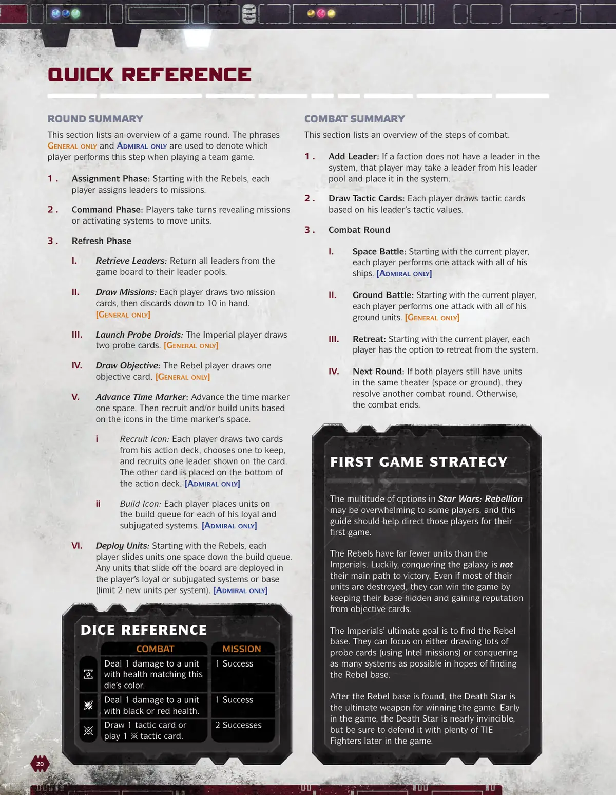
快速参考
回合总结
本节列出了游戏回合的概述。短语"仅限将军"和"仅限上将"用于在团队游戏中表示由哪位玩家执行此步骤。
1.
分配阶段：从叛军开始，每位玩家将领导者分配到任务中。
2.
指挥阶段：玩家轮流揭示任务或激活系统以移动单位。
3.
刷新阶段
I.
收回领导者：将所有领导者从游戏版图返回到他们的领导者池中。
II.
抽取任务卡：每位玩家抽取两张任务卡，然后弃牌至手牌数为10张。[仅限将军]
III.
发射探针机器人：帝国玩家抽取两张探针卡。[仅限将军]
IV.
抽取目标卡：叛军玩家抽取一张目标卡。[仅限将军]
V.
推进时间标记：将时间标记推进一格。然后根据时间标记所在格的图标招募和/或建造单位。
i
招募图标：每位玩家从他的行动牌库抽两张牌，选择一张保留，并招募卡牌上显示的一名领导者。另一张牌被放到行动牌库底部。[仅限上将]
ii
建造图标：每位玩家在他的忠诚和被征服系统上为每个系统放置单位到建造队列中。[仅限上将]
VI.
部署单位：从叛军开始，每位玩家将建造队列中的单位向下滑动一格。任何滑出版图的单位都被部署在玩家的忠诚或被征服系统或基地中（每个系统最多2个新单位）。[仅限上将]
战斗总结
本节列出了战斗步骤的概述。
1.
添加领导者：如果派系在系统中没有领导者，该玩家可以从他的领导者池中取出一名领导者并将其放置在系统中。
2.
抽取战术卡：每位玩家根据他领导者的战术值抽取战术卡。
3.
战斗轮
I.
太空战斗：从当前玩家开始，每位玩家使用他所有的飞船进行一次攻击。[仅限上将]
II.
地面战斗：从当前玩家开始，每位玩家使用他所有的地面单位进行一次攻击。[仅限将军]
III.
撤退：从当前玩家开始，每位玩家可以选择从系统中撤退。
IV.
下一轮：如果两位玩家在同一个战区（太空或地面）仍有单位，他们再进行一个战斗轮。否则，战斗结束。
骰子参考
战斗
任务
对生命值与此骰子颜色匹配的单位造成1点伤害。
1个成功
对生命值为黑色或红色的单位造成1点伤害。
1个成功
抽取1张战术卡或打出1张战术卡。
2个成功
首次游戏策略
《星球大战：叛乱》(Star Wars: Rebellion)中的众多选项可能会让一些玩家感到不知所措，而
本指南应帮助这些玩家进行他们的第一局游戏。
叛军单位的数量远少于帝国军。幸运的是，征服银河并非他们通往胜利的主要途径。即使他们的大部分单位被摧毁，他们也可以通过保持基地隐藏并从目标卡牌中获得声望来赢得游戏。
帝国军的最终目标是找到叛军基地。他们可以专注于大量抽取探测卡（使用情报任务），或者征服尽可能多的系统，以期找到叛军基地。
在找到叛军基地后，死星是赢得游戏的终极武器。游戏早期，死星几乎是无敌的，但在游戏后期，务必用大量的TIE战斗机来保卫它。